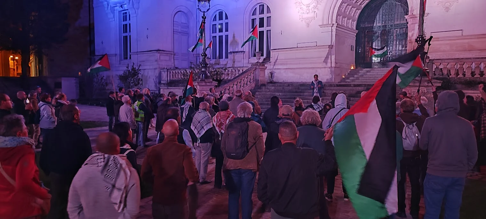
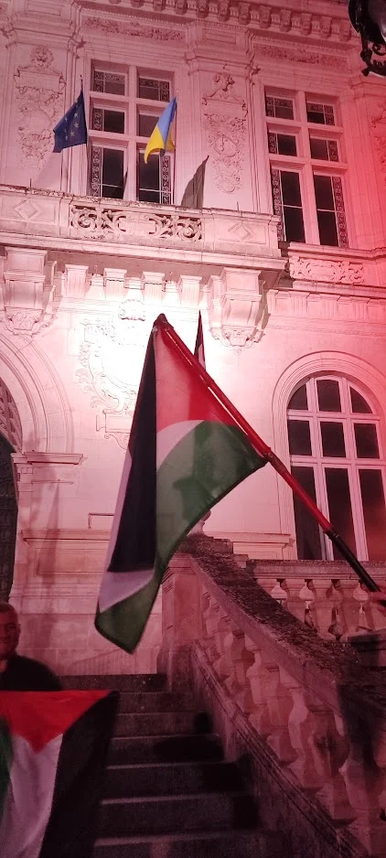
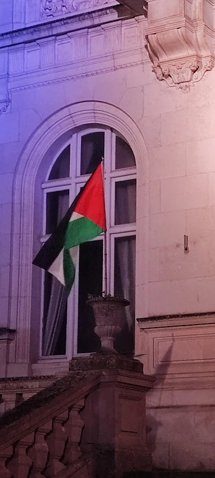
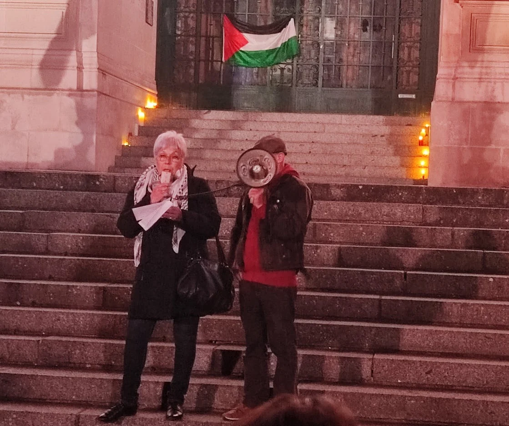

Compte rendu local
À Niort, des drapeaux palestiniens devant l’hôtel de ville le 22 septembre
Date indiquée par Facebook · 23 septembre 2025
Repères éditoriaux
Le lundi 22 septembre 2025, les personnes réunies devant l’hôtel de ville de Niort ont répondu à l’appel du Collectif Palestine 79. Elles portaient des drapeaux palestiniens au moment où la France annonçait sa reconnaissance de l’État de Palestine. Nous avons relayé ce rassemblement et appelé à traduire cette reconnaissance en actes pour la population de Gaza.
Texte conservé avec la publication
Le drapeau palestinien flotte devant la mairie de Niort.
Non, n’allez pas croire que le maire Jérôme Baloge soutient la cause du peuple palestinien. Si des drapeaux palestiniens flottaient lundi 22 septembre en soirée devant l’hôtel de ville de Niort, c’était ceux des personnes ayant répondu à l’appel du collectif Palestine 79. Ce rassemblement était destiné à marquer la solidarité avec Gaza et le peuple palestinien au moment où Emmanuel Macron prononçait son discours de reconnaissance de l’État de Palestine devant l’Assemblée Générale des Nations Unies, la France venant s’ajouter avec le Portugal, le Royaume-Uni, l’Australie, la Belgique, le Canada, le Luxembourg , Andorre, aux 148 pays l’ayant déjà fait.
Si à court terme cette reconnaissance ne changera rien au cauchemar des Gazaouis et aux drames de la colonisation, elle doit se transformer en un signal à la communauté internationale pour agir par tous les moyens pour mettre un terme au massacre perpétré en direct par le gouvernement de Netanyahou et ses ministres d’extrême droite. Aucune sanction n’a été prise jusqu'à présent contre la politique totalement indéfendable de Netanyahou, comme cela a été fait vis-à-vis de Poutine.
Et puisque le drapeau Ukrainien flotte au fronton de la mairie de Niort en signe de solidarité, le peuple palestinien ne mérite t’il pas également notre compassion ?




Sources
Archive rouge · export Facebook · AR-0002-FB-01004
À lire aussi · « Enfin ! » La reconnaissance de l’État de Palestine à la une de L’Humanité